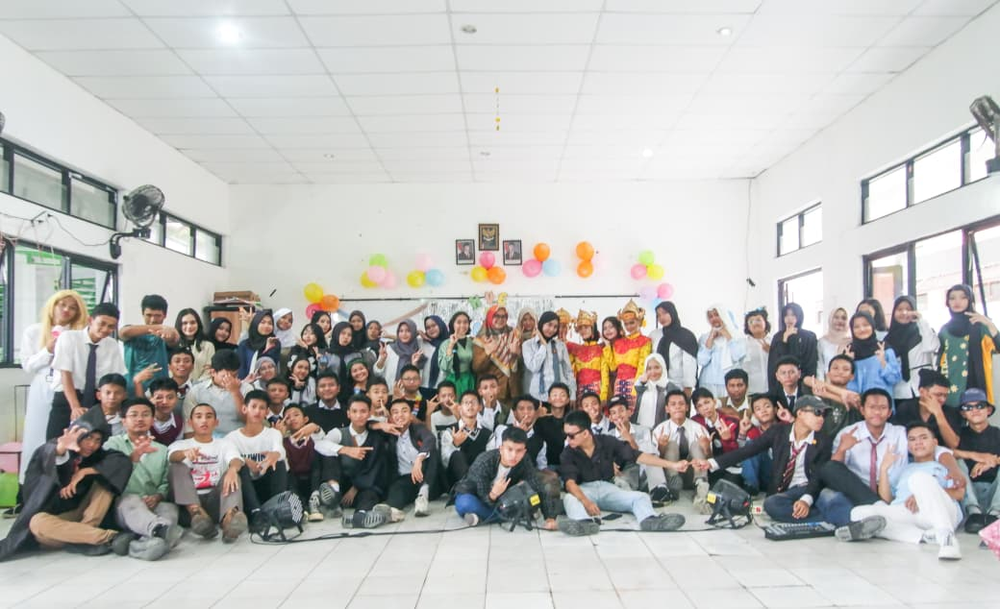
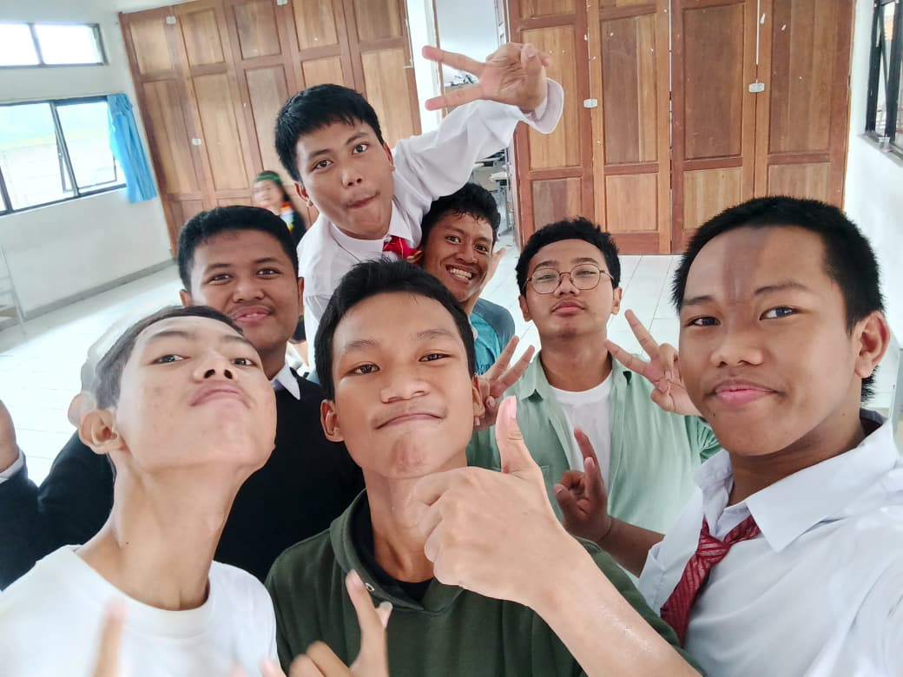
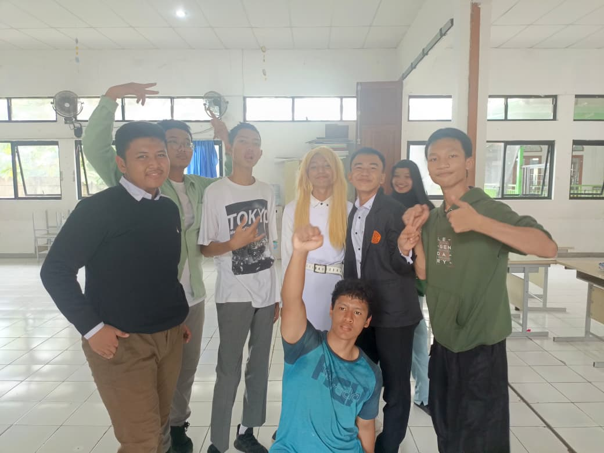

WEBSITE ARFIAN
"Dimana pun kamu berada, Tetaplah kamu selalu bersyukur"
|
|
|---|---|
| Beranda Tentang Saya Sekolah Lagu |
Kegiatan Pentas Seni All DKV In SMKN1TNG   search : Dokumentasi SMKN1TNG_195
Rabu,21 Mei 2025. Kegiatan Pentas Seni (Pensi) merupakan salah satu kegiatan yang menjadi wadah bagi siswa untuk menampilkan bakat, kreativitas, dan kemampuan dalam bidang seni. Kegiatan ini juga diselenggarakan sebagai penilaian akhir tugas Seni Budaya, sehingga setiap pertunjukan menjadi bentuk penerapan dari materi dan keterampilan seni yang telah dipelajari selama pembelajaran. Dalam kegiatan Pensi, terdapat berbagai pertunjukan yang menarik dan beragam. Salah satunya adalah teater musikal animasi Rapunzel yang menggabungkan unsur akting, musik, dialog, dan gerakan. Selain itu, terdapat pameran seni lukis yang menampilkan karya-karya siswa sebagai bentuk ekspresi melalui seni rupa. Kegiatan ini juga dimeriahkan dengan pertunjukan band yang menampilkan kemampuan siswa dalam bermusik dan bekerja sama sebagai sebuah kelompok. Tidak hanya itu, terdapat pula pertunjukan tari tradisional dan modern yang memadukan unsur kebudayaan daerah dengan gerakan tari yang lebih modern dan kreatif. Melalui kegiatan Pentas Seni ini, siswa tidak hanya mendapatkan pengalaman dalam menampilkan karya, tetapi juga dapat menjadikannya sebagai ajang kreativitas dan pelestarian kebudayaan. Berbagai pertunjukan yang ditampilkan menunjukkan keberagaman seni sekaligus memberikan kesempatan kepada siswa untuk mengembangkan kepercayaan diri, kreativitas, kerja sama, dan apresiasi terhadap kebudayaan. "Berita dalam cerita SMKN 1 TANGERANG Update"
|
Tautan Eksternal |
|
(Copyright by arfian209@gmail.com, 2026) |